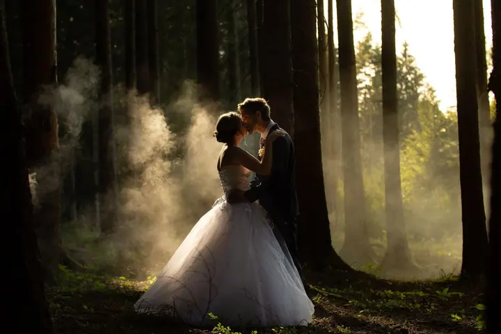
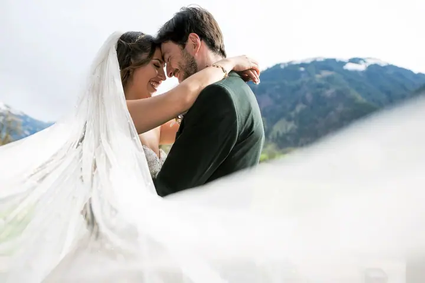
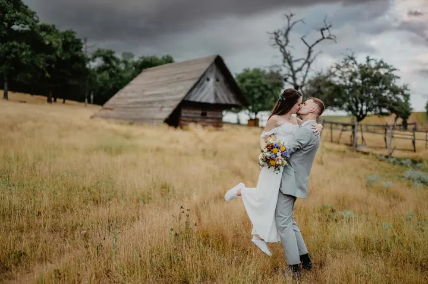
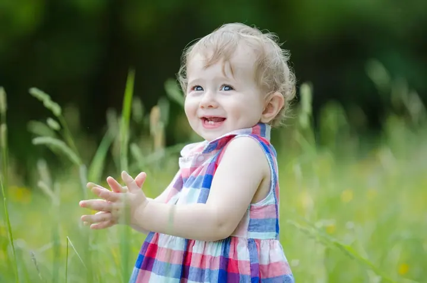

jedna
Svatební fotografie
Fotím od prvních pohledů až po poslední tanec, abyste si kouzlo svatebního dne mohli připomínat i za roky. Fotky předávám ve stylové dřevěné krabičce a fotky z dronu jsou ve všech balíčcích.

Svatební a rodinný fotograf · České Budějovice, Tábor, jižní Čechy

Jmenuji se Petr Dvořáček a aktivně fotím víc než dvanáct let. Fotím svatby, páry a těhotenské focení a rodiny, hlavně v jižních Čechách. Nejvíc mě baví autentické a přirozené fotky, které vyprávějí skutečné příběhy.
Více o mně
Co fotím
jedna
Fotím od prvních pohledů až po poslední tanec, abyste si kouzlo svatebního dne mohli připomínat i za roky. Fotky předávám ve stylové dřevěné krabičce a fotky z dronu jsou ve všech balíčcích.
dvě
Radost a vzájemná láska v přirozených a pohodových chvílích. Rád vám doporučím vhodné místo pro focení venku.
Zamilované chvíle nebo radost z očekávání miminka fotím přirozeně a s citem. Hodí se i jako předsvatební focení nebo jako dárek pro partnera.
Nejlepší fotky vznikají, když zapomenete na objektiv.

Za objektivem
Začínal jsem focením rodinných oslav a táborských zákoutí, brzy jsem se ale zaměřil na reportáže a portréty. Postupně přišly svatby a rodinné portréty a s nimi chvíle, které se v životě lidí už nikdy nezopakují.
Už při svém prvním portrétním focení jsem zjistil, že nejdůležitější je přátelský, individuální a kreativní přístup. Na výsledné kvalitě mi záleží, aby vaše fotky byly krásné i po desítkách let. Fotím na techniku Nikon a Sigma a své zkušenosti dnes rád předávám mladším kolegům.
Mluvím plynně anglicky, takže rád fotím i mezinárodní svatby. Pokud máte partnera nebo část rodiny ze zahraničí, se všemi se domluvím a postarám se, aby se před objektivem cítili příjemně a uvolněně.
Petr
Napíšete mi nebo zavoláte a domluvíme se na termínu. U svatby si vyberete balíček, nebo vám sestavím nabídku na míru.
Před svatbou se sejdeme a probereme vaše představy a program dne. U párového a rodinného focení vám rád doporučím vhodné místo.
Pohodové focení bez strojenosti. Navedu vás, když je potřeba, a jinak nechám chvíle plynout přirozeně.
Z párového a rodinného focení si vyberete fotky z náhledů a hotové vám pošlu do 10 dnů. Svatební fotky předávám v dřevěné krabičce s flash diskem a vytištěnými fotkami.
Portfolio
Otázky
Balíček Essential (5 hodin, asi 200 upravených fotek) stojí 10 000 Kč, Classic (10 hodin, asi 400 fotek) 18 000 Kč a Exclusive (12 hodin, asi 500 fotek, Instax fotokoutek a expresní ochutnávka) 24 000 Kč. Když vám žádný nesedí, rád připravím individuální nabídku.
Z náhledů si v klidu doma vyberete fotky k úpravě a hotové vám v plném rozlišení pošlu elektronicky do 10 dnů. Každá fotka navíc nad rámec balíčku stojí 100 Kč.
Ano. Doprava v rámci jižních Čech je v ceně, balíček Exclusive má v ceně dopravu po celé ČR. Jinak účtuji cestovné z Českých Budějovic 8 Kč/km.
Rád. Mluvím plynně anglicky, takže hosty ze zahraničí při focení zorganizuji a se všemi se domluvím. Fluent in English, international couples are warmly welcome!